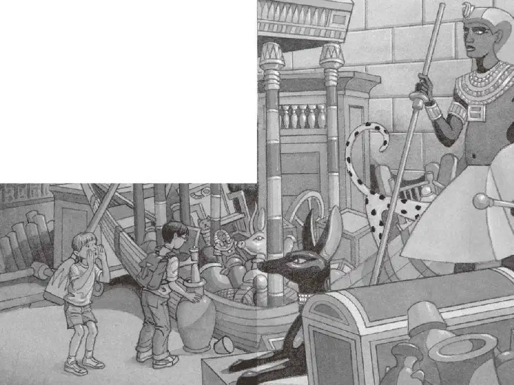

杰克把权杖、笔记本和铅笔都塞进背包。幽灵女王看上去那么温和、慈祥，杰克现在一点儿也不害怕她了。
杰克和安妮跟着幽灵女王，往金字塔的深处走去。他们来到一段楼梯前。
“楼梯！”杰克和安妮异口同声地说。
幽灵女王顺着楼梯飘然而上。
杰克和安妮跟了上去。
幽灵女王径直飘过一扇木门。
杰克和安妮用力把门一推，门缓缓地打开了。他们走进了一个寒冷的、阴风阵阵的房间。
但这时，幽灵女王不见了。
昏暗的火把映照着这个巨大的房间，天花板高得吓人。
房间的一侧放着一大堆桌子、椅子和乐器，房间的另一侧有一条小木船。
“船！”杰克兴奋地说。
“哈特比女王的金字塔里怎么会有船呢？”安妮问。
“也许这条船是要送她去另一个世界的。”杰克猜测道。
杰克和安妮走向那条船，往船里面瞧了瞧。
船里装了许多东西，有金盘子、彩绘的杯子、镶着珠宝的高脚杯、编织的毛毯、蓝宝石首饰和一些小木头雕像。
“看！”杰克说着把手伸到船里，取出了一个陶土的水罐。
“水罐！”安妮叫道。
杰克往水罐里看了看。“这里面有东西。”他说。
“是什么？”安妮问。
杰克伸手摸了摸，说：“感觉像是一张大餐巾。”
“是折叠的布吧！”安妮猜测道。
杰克从水罐里掏出那张折叠的布，布里包着一卷看上去非常古老的羊皮纸。
杰克慢慢地把羊皮纸展开，上面写着许多神奇的象形文字。
“亡灵书！”安妮兴奋地悄声说，“我们找到了。”
“哦，天哪！”杰克用手指轻轻拂过羊皮纸，它摸起来像有很长的历史了。
“哈特比女王！”安妮喊道，“我们找到了！我们找到你的亡灵书了！”
四下一片寂静。
“哈特比女王！”安妮又喊了一声。
密室另一侧的门吱吱嘎嘎地打开了。
“她也许在那里面。”安妮说。

杰克的心怦怦狂跳。
从敞开的门洞里飘来一股冷空气。
“快过去吧。”安妮催促杰克。
“等一等……”杰克有点儿犹豫。
“别等啦，”安妮说，“她等亡灵书已经等了成百上千年，不要再让她等了。”
杰克把那卷古老的羊皮纸塞进背包，然后和安妮一起穿过阴风阵阵的房间，来到那扇敞开的门前。
安妮抢先跨了进去。
“快点儿，杰克！”她喊。
杰克迈进房间，发现里面空空荡荡的，只有一个长长的金匣子。匣子是打开的，盖子在地上。
“哈特比女王？”安妮喊了一声。
无人应声。
“我们找到了，”安妮说，“找到你的亡灵书了。”
仍然不见幽灵女王的踪影。
这时，金匣子发出微微的亮光。
杰克紧张得喘不过气来。
“我们把羊皮纸放在地上，就赶紧走吧。”他对安妮说。
“不，我认为应该把它放在那里面。”安妮指着金匣子说。
“不。”杰克拒绝道。
“别害怕，”安妮说，“来吧。”
安妮抓住杰克的胳膊。两人一起走向那个闪光的金匣子。
他们走到匣子跟前，凝神向里面看去。